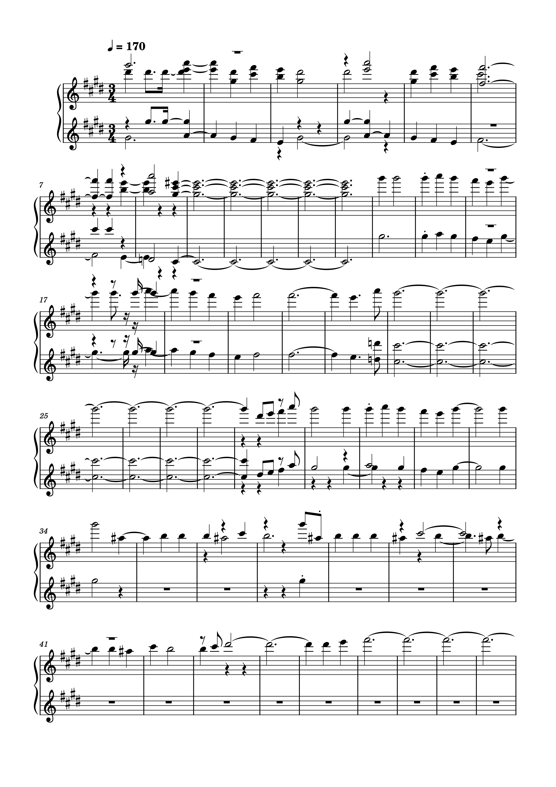
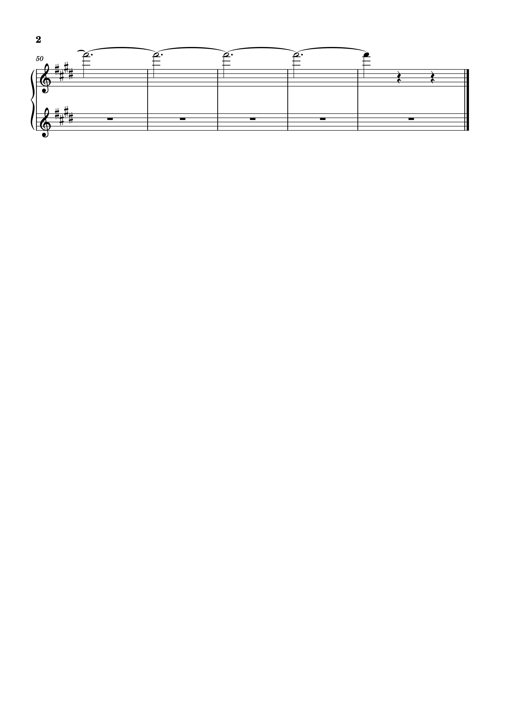

Week 10
Transcription
Original MuseScore file from Week 2:

Polyphonic Transcription:


Comparison
Most noticeable differences:
- - Tempo Marking
- - Changed from crotchet equals 85 to crotchet equals 170.
- - Time Signature
- - Changed from 4/4 to 3/4.
- - Key Signature
- - Changed from one sharp (G Major) to four sharps (E major).
- - Number of Parts
- - Music has been writter for two treble clefs instead of one.
- - Number of voices(layers)
- In addition to the two treble clefs, multiple layers(notes) have been written for some sections when in reality it should just be the one melodic line.
- - Lost information
- - Many of the accents I placed on notes and other intricate music notations (such as tenuto) have been lost in the transcription.